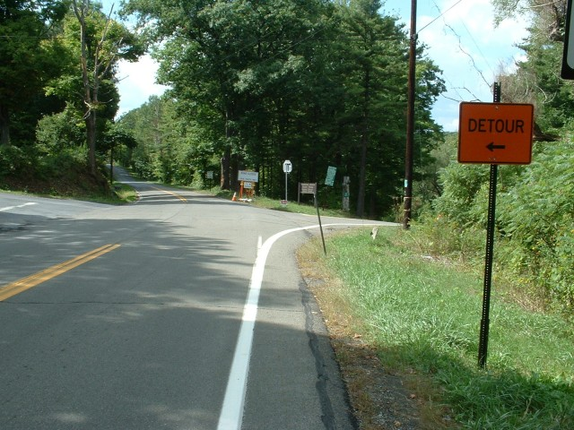
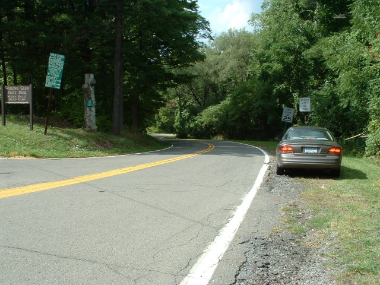
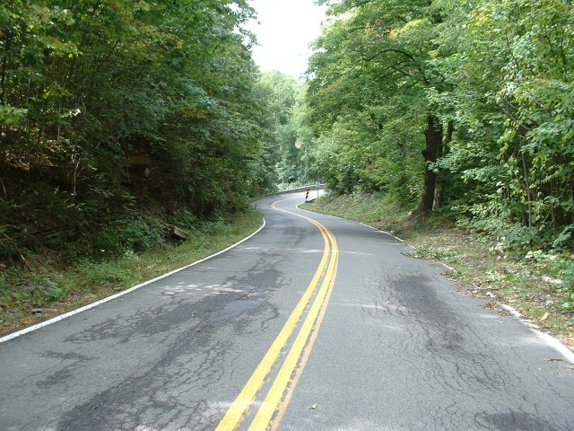
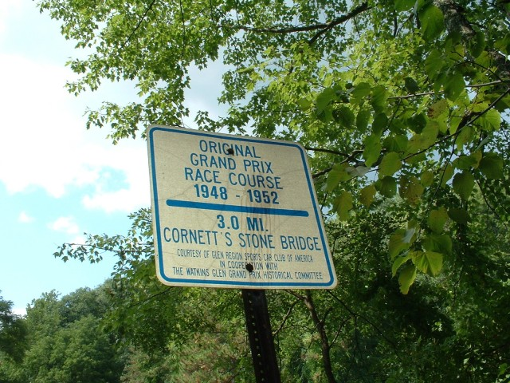
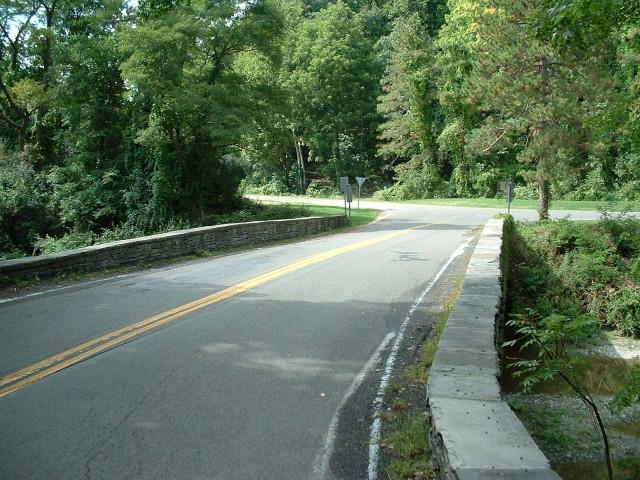
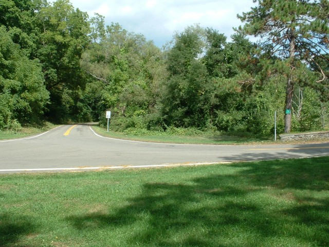
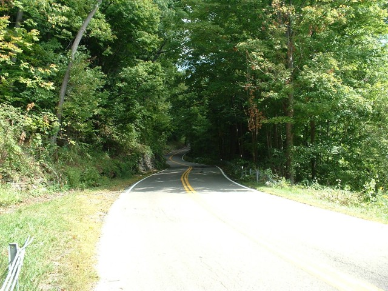
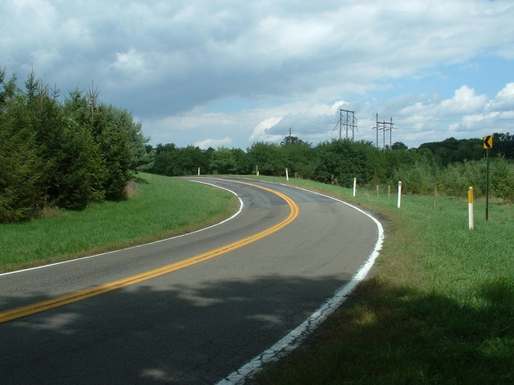

Numbers on the map represent the location where the photographs were taken. Click links above to view the photographs.
Watkins Glen - School House & Stone Bridge.
|| Contents || Start to Underpass | School House & Stone Bridge | Archy Smiths to Friars | Big Bend to Finish || Home ||
Numbers on the map represent the location where the photographs were taken. Click
links above to view the photographs.
Return to racingcircuits.net's Photo Archive Main Index

09 - School House, veers right.

10 - School House downhill.

11 - Entrance to Stone Bridge.

Cornett's Stone Bridge sign.

12 - Stone Bridge.

13 - Exit of Stone Bridge.

14 - Uphill after Stone Bridge.

15 - Off-camber left hander after Stone Bridge.
| << PREVIOUS PAGE |
Photographs and Text ©Cullen Noonen. Reproduced here with kind permission.